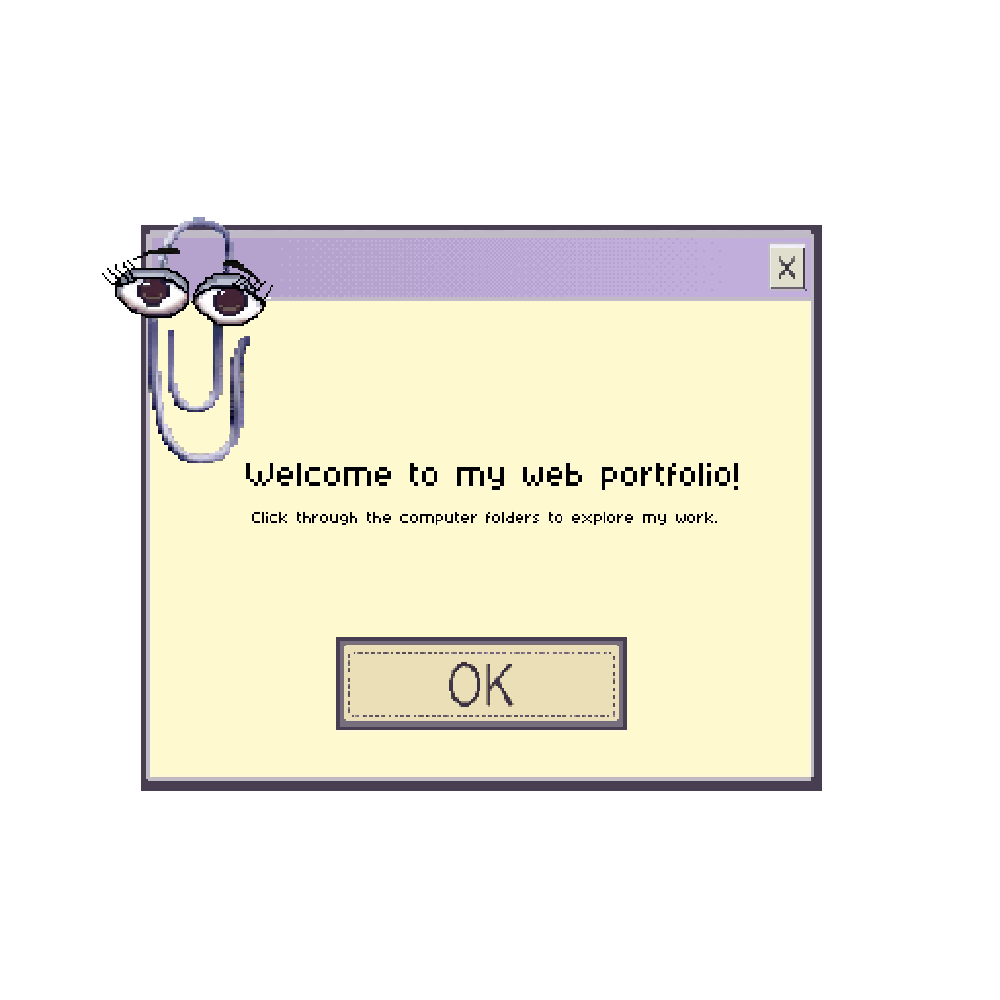
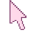

Desktop Home Preview
An experimental retro desktop version of Veronica Pletsch’s portfolio homepage.
New message available.
CPU Type: VP-486 CPU at 2500 MHz
Cache Memory: 1048576K
Memory Installed: 1024M DRAM
Pri. Master Disk: 2048MB, PORTFOLIO ROM
Pri. Slave Disk: 12582912MB
Sec. Master Disk: 16777216MB
Display Type: True Color HyperScreen
Serial Port: VP-02
Parallel Port: 378
Desktop Module: Yes
PCI device listing.....
BusDeviceDevice IDDevice Class
03724C2Network Controller
02324C4Portfolio Interface
02224C7Display Controller
02124C8Color Mapping Device
184E44Multi-Axis Navigator
145F33Proximity Sensor
135F34Ambient Light Sensor
125F55Digital Compass


